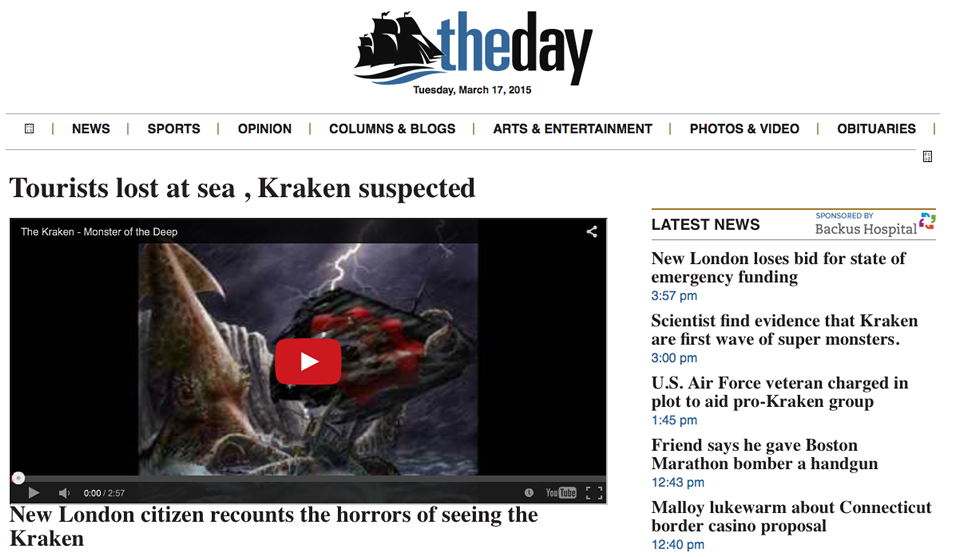

Learners will use X-Ray Goggles to remix a news website, learning about openly-licensed resources, different forms of media, and how to create something new on the Web through remix.
Do the activity on your own to become familiar with it. You may wish to set up a Webmaker account that you can share with your learners. This will save time later when they are ready to publish their remixes.
Welcome your students and explain that in this activity we're going to explore "remix." Give each student a piece of paper and a pencil.
In pairs, ask the students to sketch their favorite fictional character. No need for accuracy or too much detail — just draw it quickly.
After a few minutes, have the pairs swap their drawings. Prompt the students to add something to their partner's drawing. Explain that this is remix in action!
25
min
Hack the News using X-Ray Goggles
In the same pairs, if enough equipment is available, have the students open a modern web browser. Else, demonstrate on one computer and form small groups afterward so the students can try it on their own.
Install the X-Ray Goggles
Go to goggles.webmaker.org. Demonstrate how to drag the big yellow “Activate X-Ray Goggles” button to your browser’s bookmarks toolbar.
The X-Ray Goggles in action
Navigate to a news web site
Ask for suggestions for news site. Think about local newspapers, your school paper, or a national news site like The New York Times or The Guardian. Try to find websites that use a good amount of HTML, and not a lot of Javascript as it will be easier for your learners to remix.
Don’t worry — you’re not actually hacking the site for others. You’re changing a local version of the site that only you can see.
Decide on a remix theme
Inspired by the characters from the introduction, decide on a remix theme. Ideas include Nyan Cat,the Kraken,King Kong, or similar locally relevant characters.
Example of a news site remix by Greg McVerry
Activate the Goggles
Click the Goggles in your bookmark toolbar to turn them on. Now when you mouse over elements of the news page, you’ll see the code underneath.
Hit the “remix” button
Hit “R” on the keyboard to remix any element.
Change the text and swap in new images
Try changing the headlines or rewriting some of the stories based on your fictional character. Edit some of the links and play with font size and color.
Mouse over an image on the page and hit “R” / “Remix.” Then paste in the address/URL for your new image. To grab an image from Facebook or Instagram, you'll need to click into the post, then right-click and "Copy the Image Location".
TIP: How to find and swap in openly licensed image. The Creative Commons search page or the advanced settings in Google help you easily find an image you like with permission to use it. Right-click or control-click on the image you want and select: “Copy image location.” (Or “Copy image URL” or “Copy image address”, depending on your web browser.) Then paste your new image URL over top of the old one. Be careful not to lose the quotation marks!
X-Ray Goggles interface while hacking the New York Times
Share
Publish your remix. Once you’re done, click the Publish button, or press P on your keyboard. This makes your changes visible on the web for others to see.
Take it a step further. Have learners share their hacks with the news station their remixes used. Most news stations are on twitter, so try tweeting a link to them and think about their reactions.
10
min
Reflect and review
Demo a few of the remixed pages and ask students to share what they changed. Consider prompts such as:
What version of the website do you like more? What else would you remix? What do you wish you could remix but couldn’t? Why not? How else can you find media that you can remix?
If time permits, invite students to continue by remixing their partner's new page. You can discuss how the web makes it easy to modify content in this way and that we're always remixing and building on what others have made.
You can also discuss credibility and how understanding remix changes how you read or interpret information, as well as think about who authored it. This can build on previous Kraken activity.